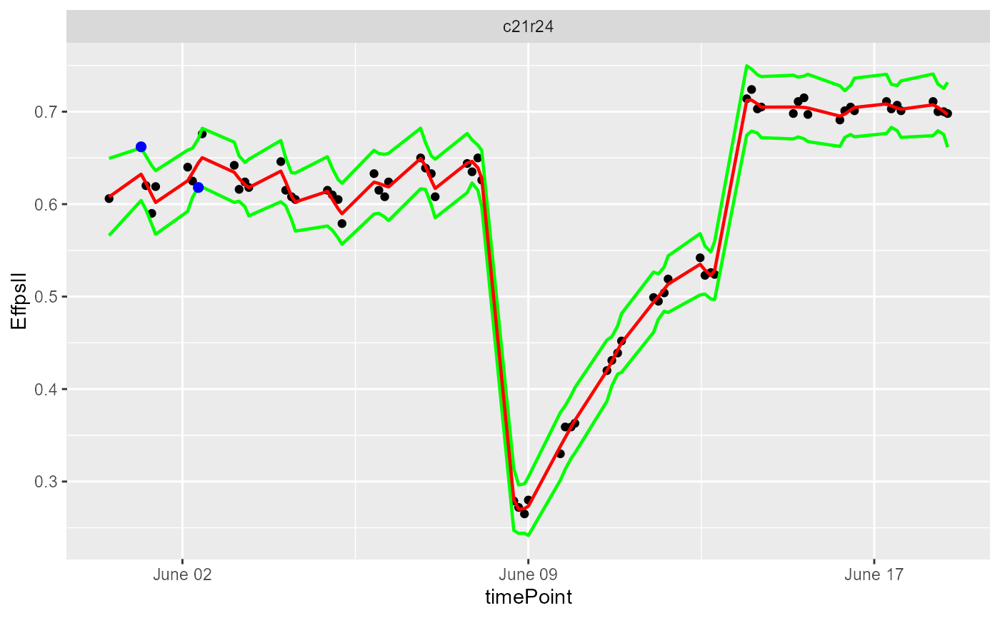
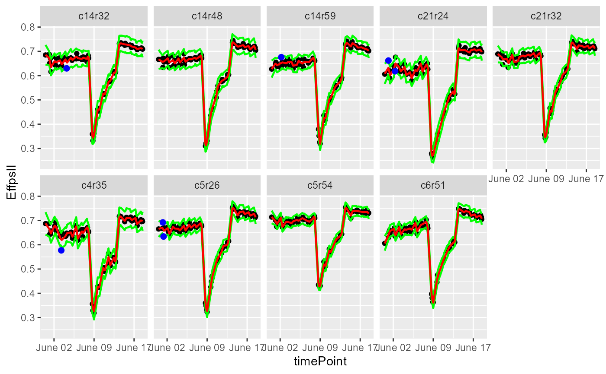

plot.pointOutliers.RdGraphical function to produce the modeled smoothing and detected outliers for each curve of a dataset using a local regression
# S3 method for pointOutliers plot(x, ..., plotIds = NULL, outOnly = TRUE, output = TRUE)
| x | An object of class pointOutliers. |
|---|---|
| ... | Extra plot options. Described per plotType in their respective section. |
| plotIds | A character vector of plotIds for which the outliers should be
detected. If |
| outOnly | Should only plots containing outliers be plotted? |
| output | Should the plot be output to the current device? If
|
Other Detect point outliers:
detectPointOutliersMaize(),
detectPointOutliers(),
removePointOutliers()
## Create a TP object containing the data from the Phenovator. PhenovatorDat1 <- PhenovatorDat1[!PhenovatorDat1$pos %in% c("c24r41", "c7r18", "c7r49"), ] phenoTP <- createTimePoints(dat = PhenovatorDat1, experimentName = "Phenovator", genotype = "Genotype", timePoint = "timepoints", repId = "Replicate", plotId = "pos", rowNum = "y", colNum = "x", addCheck = TRUE, checkGenotypes = c("check1", "check2", "check3", "check4")) ## First select a subset of plants, for example here 10 plants plantSel <- phenoTP[[1]]$plotId[1:9] # Then run on the subset resuVatorHTP <- detectPointOutliers(TP = phenoTP, trait = "EffpsII", plotIds = plantSel, confIntSize = 3, mylocfit = 0.1) ## We can then visualize the prediction by choosing a single plant... plot(resuVatorHTP, plotIds = "c21r24", outOnly = FALSE)